<!DOCTYPE HTML>
<html lang="en">
    <head>
        <meta charset="utf-8">
        <meta name="viewport" content="width=device-width, initial-scale=1.0">
        <title>A Visual Explanation of GPG Subkeys - Richard Goulter's Blog</title>

        <!-- My (Old) CSS theme -->
        <link rel="stylesheet" type="text/css" href="../../../css/default.css" />

        <!--
            jQuery & jQueryUI
        -->
        <script src="https://code.jquery.com/jquery-2.1.4.min.js"></script>
        <script src="https://code.jquery.com/ui/1.11.3/jquery-ui.min.js"></script>
        <link rel="stylesheet" type="text/css" href="https://code.jquery.com/ui/1.11.3/themes/smoothness/jquery-ui.css" />

        <!--
            Pandoc Style CSS
            (for syntax highlighted snippets)
        -->
        <link rel="stylesheet" type="text/css" href="../../../css/syntax.css" />

        <!--
            Bootstrap
        -->
        <link rel="stylesheet" href="https://maxcdn.bootstrapcdn.com/bootstrap/3.3.4/css/bootstrap.min.css">
        <link rel="stylesheet" href="https://maxcdn.bootstrapcdn.com/bootstrap/3.3.4/css/bootstrap-theme.min.css">
        <script src="https://maxcdn.bootstrapcdn.com/bootstrap/3.3.4/js/bootstrap.min.js"></script>

        <style>
            /*
             * Bootstrap defines blockquote as 17px,
             * so it looks stupidly large in my blogposts. */
            blockquote {
                font-size: 14px;
            }
        </style>

        <!--
            Waypoints, and Waypoints-Sticky,
            so we can do this:
            http://imakewebthings.com/waypoints/shortcuts/sticky-elements/
        -->
        <script src="../../../js/jquery.waypoints.min.js"></script>
        <script src="../../../js/sticky.min.js"></script>

        <!-- My analytics stuff -->
        <script src="../../../js/my_analytics.js"></script>
        <script src="../../../js/my_analytics_debug.js"></script>

        <!--
            TOCify
        -->
        <script src="https://cdnjs.cloudflare.com/ajax/libs/jquery.tocify/1.9.0/javascripts/jquery.tocify.min.js"></script>

        <!--
            Patched TOCify css file.
            (Don't want fixed `.tocify`).
        -->
        <link rel="stylesheet" type="text/css" href="../../../css/jquery.tocify.css" />

        <style>
        .navbar {
            margin-bottom: 0px;
        }

        .banner-image {
            width:100%;
        }

        .banner {
            margin-left: 0px;
            margin-right: 0px;
        }

        body {
            background-color: #e2e2e2;
        }

        #page {
            padding-left:0;
            padding-right:0;
            background-color: #ffffff;
        }
        </style>

        <!-- Google Analytics -->
        <!-- Google tag (gtag.js) -->
        <script async src="https://www.googletagmanager.com/gtag/js?id=G-H13NWYDX0G"></script>
        <script>
          window.dataLayer = window.dataLayer || [];
          function gtag(){dataLayer.push(arguments);}
          gtag('js', new Date());

          gtag('config', 'G-H13NWYDX0G');
        </script>
    </head>
    <body>
        <div id="page" class="container">
            <!-- This, with no padding on left/right -->
            <div class="banner">
                <nav class="navbar navbar-default">
    <div class="navbar-header">
        <button type="button" class="navbar-toggle collapsed" data-toggle="collapse" data-target="#navbar-collapse-1">
            <span class="sr-only">Toggle navigation</span>

            <!-- The Hamburger -->
            <span class="icon-bar"></span>
            <span class="icon-bar"></span>
            <span class="icon-bar"></span>
        </button>
        <a class="navbar-brand" href="../../../">Richard Goulter's Blog</a>
    </div>

    <div class="collapse navbar-collapse" id="navbar-collapse-1">
        <ul class="nav navbar-nav navbar-right">
            <li><a href="../../../">Home</a></li>
            <li><a href="../../../blog/yi.html">Yi</a></li>
            <li><a href="../../../blog/emacs.html">Emacs</a></li>
            <li><a href="../../../blog/what-i-wish-i-knew-when-i-started-using-nix.html">Nixpkgs</a></li>
            <li><a href="../../../blog/archive.html">Archive</a></li>
        </ul>
    </div>
</nav>

            </div>

            <hr style="margin: 0px; border-top: 5px solid black;" />

            <div id="content" class="container">
                <h1>A Visual Explanation of GPG Subkeys</h1>
                <div class="info">
    Posted on June 10, 2022
    
        by Richard Goulter
    <br />
    
    Tags: <a title="All pages tagged 'programming.gpg'." href="../../../blog/tags/programming.gpg.html" rel="tag">programming.gpg</a>, <a title="All pages tagged 'yubikey'." href="../../../blog/tags/yubikey.html" rel="tag">yubikey</a>
    
</div>

<p>As with anyone who’s been using git for long enough, I’m familiar enough with
SSH keys (Even to the point where I don’t really need to follow <a href="https://docs.github.com/en/authentication/connecting-to-github-with-ssh/generating-a-new-ssh-key-and-adding-it-to-the-ssh-agent">the GitHub docs
for generating a new
key</a>).</p>
<p>My developer journey hasn’t led me to build the same intuition for GPG keys.</p>
<p>So, when I see fancy wiki pages and guids, such as <a href="https://wiki.debian.org/Subkeys">Debian wiki’s page on
subkeys</a>, <a href="https://wiki.debian.org/OfflineMasterKey">on offline master
keys</a>, or <a href="https://wiki.debian.org/GnuPG/AirgappedMasterKey">on an airgapped master
key</a>, it sounds really fancy;
but I’m left curious to get an intuition for what’s going on.</p>
<p>I hope to use this blogpost illustrate enough of the details to build an
intuition.</p>
<h2 id="public-key-cryptography">Public Key Cryptography</h2>
<p>The <a href="https://en.wikipedia.org/wiki/Public-key_cryptography">Wikipedia page on Public Key cryptography</a>
has some nice diagrams.</p>
<p>This itself should still be relatively straightforward, comparing with how SSH
keys get used with git forges like GitHub, and with SSHing into servers:</p>
<div style="display: flex; justify-content: center; flex-wrap: wrap; gap: 1.5rem;">
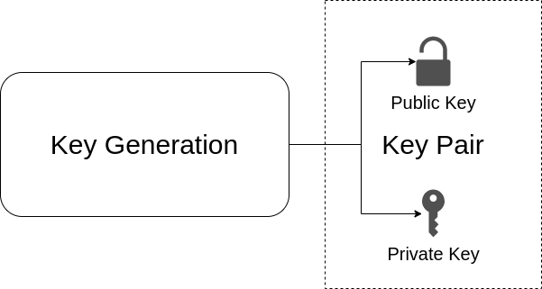
</div>
<ul>
<li><p>You have a key pair with a private key and public key,</p></li>
<li><p>you keep the private key <em>private</em>,</p></li>
<li><p>you share the public key with the servers you want to access to.</p>
<ul>
<li>Having the private key gives access.
And this is ‘secure’ because only the user with the private key
which matches the public keys will be granted access.</li>
</ul></li>
</ul>
<p>So it makes sense: Encrypting;</p>
<div style="display: flex; justify-content: center; flex-wrap: wrap; gap: 1.5rem;">
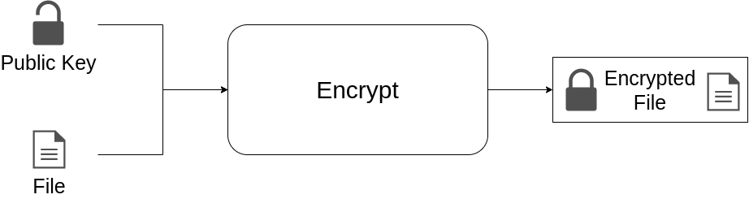 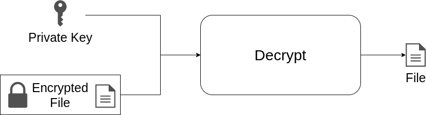
</div>
<ul>
<li><p>You encrypt something for someone else using their public key.</p>
<ul>
<li><p>Everyone has their public key, so everyone can send them something.</p></li>
<li><p>Only they have their private key, so only they can read the message.</p></li>
</ul></li>
</ul>
<p>Or signing:</p>
<div style="display: flex; justify-content: center; flex-wrap: wrap; gap: 1.5rem;">
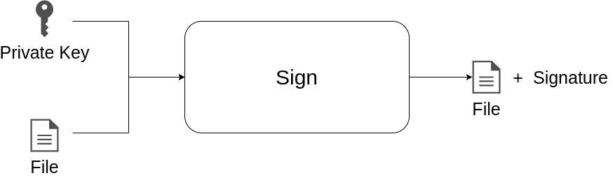 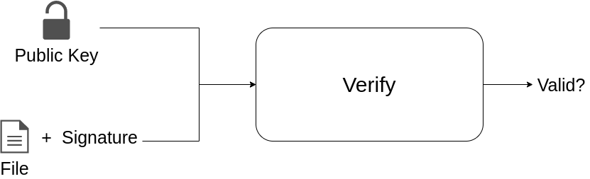
</div>
<ul>
<li><p>You sign something with your private key.</p>
<ul>
<li><p>You’re the only person who has your private key, so only you can sign something.</p></li>
<li><p>Everyone has your public key, so everyone else can verify you signed it.</p></li>
</ul></li>
</ul>
<h2 id="the-rote-gpg-commands">The Rote GPG Commands</h2>
<p>So far, we can just label everything above with “GPG” and it still makes sense:</p>
<p>e.g. Key generation could be done by invoking a command like:</p>
<pre><code>gpg --quick-generate-key &quot;Richard Goulter (NixOS Desktop) &lt;richard.goulter@rgoulter.com&gt;&quot;</code></pre>
<p>e.g. exporting a key, to copy the public part to GitHub or whatever could be done by invoking a command like:</p>
<pre><code>gpg --export --armor &quot;Richard Goulter (NixOS Desktop)&quot;</code></pre>
<p>e.g. encrypting/decrypting a message could be done by invoking a command like:</p>
<pre><code>gpg --encrypt --recipient &quot;My Colleague&quot; document.txt</code></pre>
<p>and the recipient could decrypt it with:</p>
<pre><code>gpg --decrypt document.txt.gpg</code></pre>
<p>e.g. signing could be done by invoking a command like:</p>
<pre><code>gpg --clearsign file.txt</code></pre>
<p>or</p>
<pre><code>gpg --detach-sign file.txt</code></pre>
<p>and the signature could be verified with a command like:</p>
<pre><code>gpg --verify file.txt.asc</code></pre>
<p>or</p>
<pre><code>gpg --verify file.txt.sig</code></pre>
<h2 id="what-starts-to-confuse-me-subkeys">What Starts to Confuse Me: Subkeys</h2>
<p>Okay, but having created a key, then list the keys:</p>
<pre><code>gpg --list-keys</code></pre>
<p>outputs something like:</p>
<pre>
pub   rsa4096 2020-10-05 [SC] [expires: 2022-08-01]
      D9463A85F093811B887DE4B03229F4BB09CC8A22
uid           [ultimate] Richard Goulter (NixOS Desktop) <richard.goulter@gmail.com>
sub   rsa4096 2020-10-05 [E] [expires: 2022-08-01]
</pre>
<p>and secret keys:</p>
<pre><code>gpg --list-secret-keys</code></pre>
<p>outputs something like:</p>
<pre>
sec   rsa4096 2020-10-05 [SC] [expires: 2022-08-01]
      D9463A85F093811B887DE4B03229F4BB09CC8A22
uid           [ultimate] Richard Goulter (NixOS Desktop) <richard.goulter@gmail.com>
ssb   rsa4096 2020-10-05 [E] [expires: 2022-08-01]
</pre>
<p>I can see the only difference is <code>pub</code>, <code>sub</code>, vs <code>sec</code> and <code>ssb</code>. What?</p>
<p>What’s <code>[SC]</code>, <code>[E]</code>?</p>
<p>And if you enable some recommended options in <code>~/.gnupg/gpg.conf</code>:</p>
<pre><code>keyid-format LONG
with-fingerprint
with-keygrip</code></pre>
<p>re-running:</p>
<pre><code>gpg --list-keys</code></pre>
<p>outputs:</p>
<pre>
pub   rsa4096/3229F4BB09CC8A22 2020-10-05 [SC] [expires: 2022-08-01]
      Key fingerprint = D946 3A85 F093 811B 887D  E4B0 3229 F4BB 09CC 8A22
      Keygrip = 480A928A7AA17A693FDF4F4E9DEAEBEE1B778FB7
uid                 [ultimate] Richard Goulter (NixOS Desktop) <richard.goulter@gmail.com>
sub   rsa4096/15BAE7FB6F3DA787 2020-10-05 [E] [expires: 2022-08-01]
      Keygrip = A996CF5366A2FFCA11EE958FBA3AC4BDFDB6AC76
</pre>
<p>I feel like this one I’m allowed to be confused by.</p>
<p>Long Id?</p>
<p>Fingerprint??</p>
<p>Keygrip???</p>
<h2 id="a-key-consisting-of-multiple-keys">A Key Consisting of Multiple Keys</h2>
<p>Uh. Hopefully it’s not too late in this blogpost to mention it.<br />
But “key” gets used in multiple ways e.g. “running <code>gpg --quick-generate-key</code>
generates a GPG ‘key’”, and in “a GPG ‘key’ consists of at least one key pair”.</p>
<p>Generally, context is often enough to disambiguate these. But given that GPG is
confusing enough as it is, it’s worth mentioning the ambiguity.</p>
<p>Taking a look at the terminology GPG’s manual uses:
<a href="https://www.gnupg.org/gph/en/manual.html#CONCEPTS" class="uri">https://www.gnupg.org/gph/en/manual.html#CONCEPTS</a></p>
<blockquote>
<p>GnuPG uses a somewhat more sophisticated scheme in which a user has a primary
keypair and then zero or more additional subordinate keypairs. The primary and
subordinate keypairs are bundled to facilitate key management and the bundle
can often be considered simply as one keypair.</p>
</blockquote>
<p>This excerpt refers to the keys being ‘bundled’, and that the bundle can often
be considered as a keypair.</p>
<p>The GnuPG FAQ has an answer which better describes the ambiguity.
<a href="https://www.gnupg.org/faq/gnupg-faq.html#define_key" class="uri">https://www.gnupg.org/faq/gnupg-faq.html#define_key</a></p>
<blockquote>
<p>The word ‘key’ is unfortunately ambiguous. It can either refer to the
mathematical structures that allow encryption, decryption, signing and
verification to occur, or to the rather large blobs of data that contain those
mathematical structures as well as information about the person associated
with it, additional subkeys, and so forth.</p>
<p>With respect to the large blobs of data, it is preferable to call them
‘certificates’, so that the word ‘key’ may be unambiguously recognized as
meaning just the mathematical structures. Unfortunately, this is a custom that
seems to be honored mostly in the breach.</p>
</blockquote>
<p>In this blogpost, I’ll try to use the word “key” in scare quotes to indicate
“bundle of key pairs”.</p>
<h2 id="other-gpg-featurescomplications">Other GPG Features/Complications</h2>
<p>So while I feel like the idea of “a key pair, with a private part and a public
part” is understandable, there are other features of GPG “keys” which make
things more complicated:</p>
<p>GPG “keys” can be set with an expiry date.<br />
(This is useful as a way of indicating you’ve still got access to the private
key).</p>
<p>GPG “keys” can have multiple “User IDs” (Name + email). Photos can be included
in the GPG “key”.</p>
<p>GPG “keys” can be signed. Or more specifically: the keys and UIDs can be signed.<br />
– I don’t find this intuitive. Sure, Bruce Wayne and Batman are different
identities, but I don’t see why they’d want to use the same key.</p>
<p>GPG “keys” can be revoked. That is, an indication that other subkeys or UIDs or signatures
should not be trusted.<br />
– I didn’t find this intuitive.</p>
<p>GPG “keys” can have some level of trust.<br />
– This also seems unintuitive to me.</p>
<h2 id="why-subkeys-are-subkeys">Why Subkeys are Subkeys</h2>
<p>I found <a href="https://serverfault.com/questions/397973/gpg-why-am-i-encrypting-with-subkey-instead-of-primary-key">this StackOverflow answer about why different keys are used for
encryption vs signing</a>
illuminating:</p>
<blockquote>
<p>If you look into the details of the math of public-key encryption, you will
discover that signing and decrypting are actually identical operations. Thus
in a naïve implementation it is possible to trick somebody into decrypting a
message by asking them to sign it.</p>
</blockquote>
<p>i.e. it would be bad a idea to use the same (sub)key for both signing and
encryption. So, GPG uses a separate subkey for at least encryption.</p>
<p>This answer also explains what the <code>[SC]</code> and <code>[E]</code> refer to:</p>
<blockquote>
<p>E = encrypt/decrypt (decrypt a message you received encrypted for you to read)<br />
S = sign (sign data. For example a file or to send signed e-mail)<br />
C = certify (sign another key, establishing a trust-relation)<br />
A = authentication (log in to SSH with a PGP key; this is relatively new usage)</p>
</blockquote>
<p>The <a href="https://en.wikipedia.org/wiki/RSA_(cryptosystem)">Wikipedia page about RSA</a>
gives an example of using RSA keys, which is useful for understanding “signing
and decrypting are identical operations”.</p>
<p><a href="https://www.gnupg.org/gph/en/manual.html#AEN267">The GPG User Guide (Section “Key Management”, subsection “Key
integrity”)</a> sort of does
explain the “master” and “subordinate” part:</p>
<blockquote>
<p>Using digital signatures is a solution to this problem. When data is signed by
a private key, the corresponding public key is bound to the signed data. In
other words, only the corresponding public key can be used to verify the
signature and ensure that the data has not been modified. A public key can be
protected from tampering by using its corresponding private master key to sign
the public key components and user IDs, thus binding the components to the
public master key. Signing public key components with the corresponding
private master signing key is called self-signing, and a public key that has
self-signed user IDs bound to it is called a certificate.</p>
</blockquote>
<p>The ‘self-signing’ of sub-keys by the master key is a detail which wasn’t clear to me.</p>
<p>“Subordinate” is a surprising word here.<br />
Even the <em>absolutely excellent</em> post <a href="https://davesteele.github.io/gpg/2014/09/20/anatomy-of-a-gpg-key/">“anatomy of a gpg
key”</a> expands
“subkey” to “sub-component of another key”, not “subordinate key”.</p>
<p>I further feel vindication in that the website <a href="https://gpg.wtf/" class="uri">https://gpg.wtf/</a> also discusses
‘what a subkey is’ in its “things that are confusing about gpg”.</p>
<p>The “master key signs the subkeys” can be seen by running a command like:</p>
<pre><code>gpg --check-signatures 0x3229F4BB09CC8A22</code></pre>
<p>which outputs something like:</p>
<style>
span.key0 {
  color: #2072B8;
}
span.key1 {
  color: #7FBA42;
}
</style>
<pre>
<b>pub</b>   rsa4096/<span class="key0">0x3229F4BB09CC8A22</span> 2020-10-05 [SC] [expires: 2022-08-01]
      Key fingerprint = <span class="key0">D946 3A85 F093 811B 887D  E4B0 3229 F4BB 09CC 8A22</span>
      Keygrip = <span class="key0">480A928A7AA17A693FDF4F4E9DEAEBEE1B778FB7</span>
<b>uid</b>                   [ultimate] Richard Goulter (NixOS Desktop) <richard.goulter@gmail.com>
sig!3        <span class="key0">0x3229F4BB09CC8A22</span> 2022-05-03  Richard Goulter (NixOS Desktop) <richard.goulter@gmail.com>
<b>sub</b>   rsa4096/<span class="key1">0x15BAE7FB6F3DA787</span> 2020-10-05 [E] [expires: 2022-08-01]
      Keygrip = <span class="key1">A996CF5366A2FFCA11EE958FBA3AC4BDFDB6AC76</span>
sig!         <span class="key0">0x3229F4BB09CC8A22</span> 2022-05-03  Richard Goulter (NixOS Desktop) <richard.goulter@gmail.com>

gpg: 2 good signatures
</pre>
<p>i.e. The GPG “key” has:</p>
<ul>
<li><p>the public master key,</p></li>
<li><p>a UID which is signed with the <code>[SC]</code> key,</p></li>
<li><p>a subordiate key, which is intended for <code>[E]</code> usage, as signed with the <code>[SC]</code> key.</p></li>
</ul>
<h2 id="illustrating-the-rote-gpg-operations">Illustrating the Rote GPG Operations</h2>
<p>Going back over the rote commands again, now with a diagrams to illustrate
subkeys at work:</p>
<h3 id="key-generation">Key Generation</h3>
<div style="display: flex; justify-content: center; flex-wrap: wrap; gap: 1.5rem;">
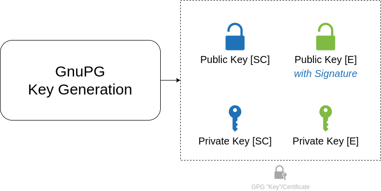
</div>
<p>could be done by invoking a command like:</p>
<pre><code>gpg --quick-generate-key &quot;Richard Goulter (NixOS Desktop) &lt;richard.goulter@rgoulter.com&gt;&quot;</code></pre>
<h3 id="export-public-key">Export Public Key</h3>
<p>Exporting the key to copy the public part to GitHub or whatever:</p>
<div style="display: flex; justify-content: center; flex-wrap: wrap; gap: 1.5rem;">
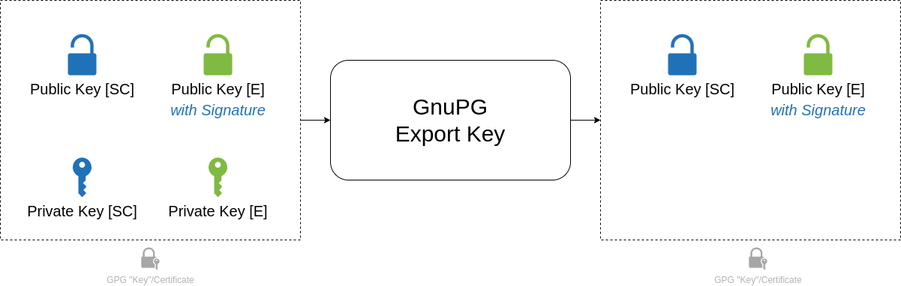
</div>
<p>could be done by invoking a command like:</p>
<pre><code>gpg --export --armor &quot;Richard Goulter (NixOS Desktop)&quot;</code></pre>
<h3 id="encryptingdecrypting-a-message">Encrypting/Decrypting a Message</h3>
<div style="display: flex; justify-content: center; flex-wrap: wrap; gap: 1.5rem;">
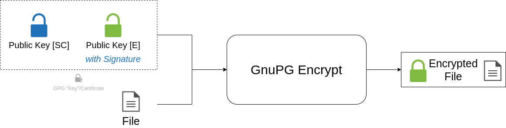 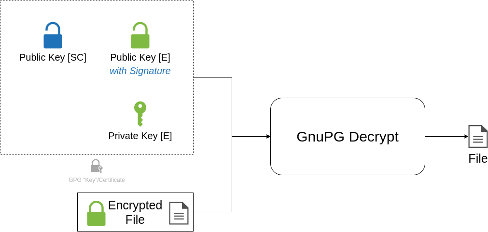
</div>
<p>could be done by invoking a command like:</p>
<pre><code>gpg --encrypt --recipient &quot;My Colleague&quot; document.txt</code></pre>
<p>and the recipient could decrypt it with:</p>
<pre><code>gpg --decrypt document.txt.gpg</code></pre>
<h3 id="signing">Signing</h3>
<div style="display: flex; justify-content: center; flex-wrap: wrap; gap: 1.5rem;">
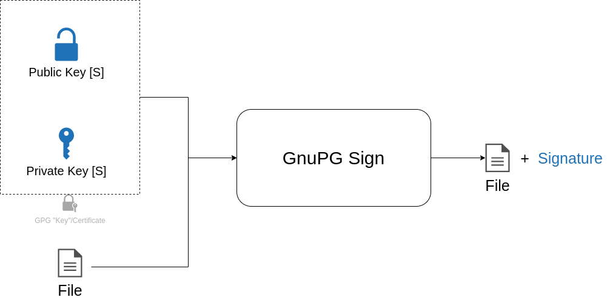 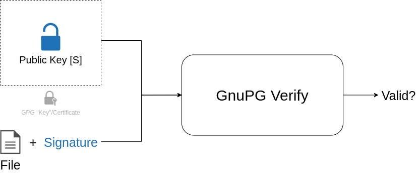
</div>
<p>could be done by invoking a command like:</p>
<pre><code>gpg --clearsign file.txt</code></pre>
<p>or</p>
<pre><code>gpg --detach-sign file.txt</code></pre>
<p>and the signature could be verified with a command like:</p>
<pre><code>gpg --verify file.txt.asc</code></pre>
<p>or</p>
<pre><code>gpg --verify file.txt.sig</code></pre>
<h2 id="gpg-for-ssh">GPG for SSH</h2>
<p>Again, coming from the mindset of “SSH keys for pushing to <code>git</code> repositories,
<code>gpg</code> for signing stuff”, hearing “GPG ‘keys’ can be used for SSH too” sounds
like wizardry.</p>
<p>This is also where “keygrip” comes into use. As <a href="https://blog.djoproject.net/2020/05/03/main-differences-between-a-gnupg-fingerprint-a-ssh-fingerprint-and-a-keygrip/">this blogpost discussing GPG
fingerprint vs SSH key fingerprint vs GPG
keygrip</a>
explains, the keygrip is a way of identifying the key regardless of
protocol/usage.</p>
<p>Now that I have a better understanding of subkeys,
it seems the main points for “using GPG for SSH” involves two things to understand:</p>
<ul>
<li><p>Using a suitably configured <code>gpg-agent</code> instead of <code>ssh-agent</code>, by pointing
the <code>SSH_AUTH_SOCK</code> and <code>SSH_AGENT_PID</code> to GPG.</p></li>
<li><p>Having a subkey with <code>[A]</code> capability.</p></li>
</ul>
<h2 id="visualisation-of-the-offline-master-key-setup">Visualisation of the Offline Master Key Setup</h2>
<p>With the above in mind, a summary of the result of these tutorials for setting
up master keys could be visualised as follows:</p>
<div style="display: flex; justify-content: center; flex-wrap: wrap; gap: 1.5rem;">
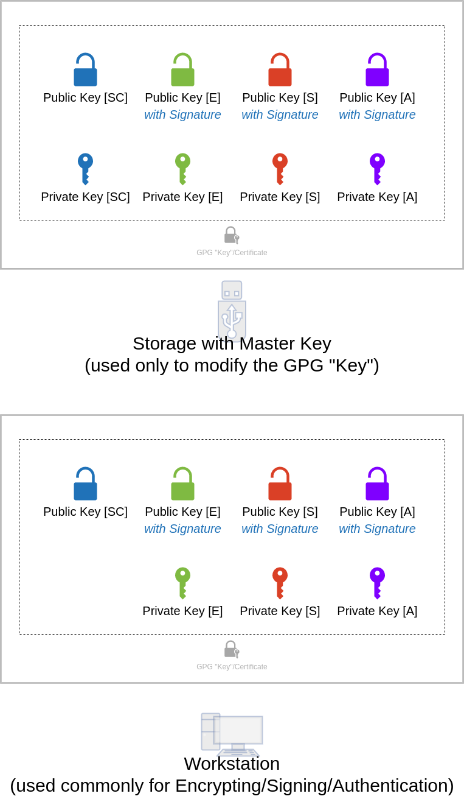
</div>
<p>Which seems less complex than all the confusion I had over it made it out to be.</p>
<p>As the Debian wiki article pages discuss, because the private master key is used
to self-sign the subkeys in the GPG “key”, it can then be used to revoke the
other subkeys.</p>
<h2 id="yubikey-as-a-gpg-smart-card">Yubikey as a GPG Smart Card</h2>
<p>Yubikeys can then allow a nicer User Experience for using
GPG keys. e.g. the Yubikey supports 3 slots for private keys: for signing, encryption, or authentication.</p>
<div style="display: flex; justify-content: center; flex-wrap: wrap; gap: 1.5rem;">
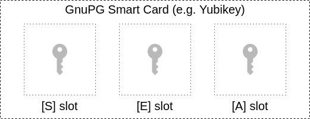
</div>
<p>e.g. <a href="https://developers.yubico.com/PGP/PGP_Walk-Through.html">Yubico’s PGP walkthrough</a>.</p>

<hr />

<div>
    
    <a href="../../../blog/posts/programming/2022-08-24-travel-setup-using-a-fancy-keyboard-with-a-laptop.html" style="float:left;">Newer post</a>
    
    
    <a href="../../../blog/posts/programming/2022-06-07-epa-in-emacs-is-a-neat-ux-on-top-of-gpg.html" style="float:right; text-align: right;">Older post</a>
    
</div>
<br style="clear: both;" />

<hr />

            </div>

            <hr style="margin-bottom: 0px; border-top: 2px solid black;" />

            <div id="footer" class="pull-right" style="padding-right: 10px;">
                Site proudly generated by
                <a href="http://jaspervdj.be/hakyll">Hakyll</a>
            </div>
        </div>

        <script>
            // The callbacks we wanna use
            // Phone-home, telling Google Analytics various metrics/dimensions

            // Use custom dimensions & metrics
            var AnalyticDimensionReaderKind = 'dimension1';
            var AnalyticMetricActiveTime      = 'metric1';
            var AnalyticMetricLongestIdleTime = 'metric2';
            var AnalyticMetricReadCount       = 'metric3';

            var gaCallbacks = {
                "scrollPercent": function(ms, perc) {
                    if (perc > 85) {
                        // EVENT: Page read
                        ga('send', {
                            hitType:       'event',
                            eventCategory: 'Scrolling',
                            eventAction:   'atBottom',
                            eventValue:    String(ms)
                        });
                    }
                },
                "read": function(ms, ct, timeToReach) {
                    // Use this to set DIMENSION
                    // timeToReach < 5s ==> Skim (default = Visitor)
                    if (timeToReach < 5 * 1000) {
                        // dimension1 = ReaderKind
                        ga('set', AnalyticDimensionReaderKind, "skimmer");
                    }

                    // timeToReach > 30s ==> Reader
                    if (timeToReach > 30 * 1000) {
                        // dimension1 = ReaderKind
                        ga('set', AnalyticDimensionReaderKind, "reader");
                    }

                    // EVENT: Page read
                    ga('send', {
                        hitType:       'event',
                        eventCategory: 'Reading',
                        eventAction:   'read',
                        eventValue:    String(timeToReach)
                    });

                    // METRIC
                    ga('set', AnalyticMetricReadCount, String(ct));
                },
                "initialIdle": function(ms) {
                    // EVENT: Started Reading
                    ga('send', {
                        hitType:       'event',
                        eventCategory: 'Scrolling',
                        eventAction:   'begun',
                        eventValue:    String(ms)
                    });
                },
                "timeSpent": function(total, active, curIdle, initIdle, longestIdle) {
                    // Update METRIC(S)?
                    ga('set', AnalyticMetricActiveTime, String(active));
                    ga('set', AnalyticMetricLongestIdleTime, String(longestIdle));
                },
                "idle": function(ms) {
                },
                "longestIdle": function(ms) {
                }
            }

            window.onload = function() {
                myAnalyticsInit(gaCallbacks);

                //
                // Initial dimensions & metrics
                //

                ga('set', AnalyticMetricReadCount, String(0));

                // EVENT: Page load
                ga('send', {
                    hitType:       'event',
                    eventCategory: 'pageLoad',
                    eventAction:   'begun',
                    eventValue:    String(0)
                });

                // DIMENSION: visitor
                ga('set', AnalyticDimensionReaderKind, "visitor");
            }
        </script>
    </body>
</html>
